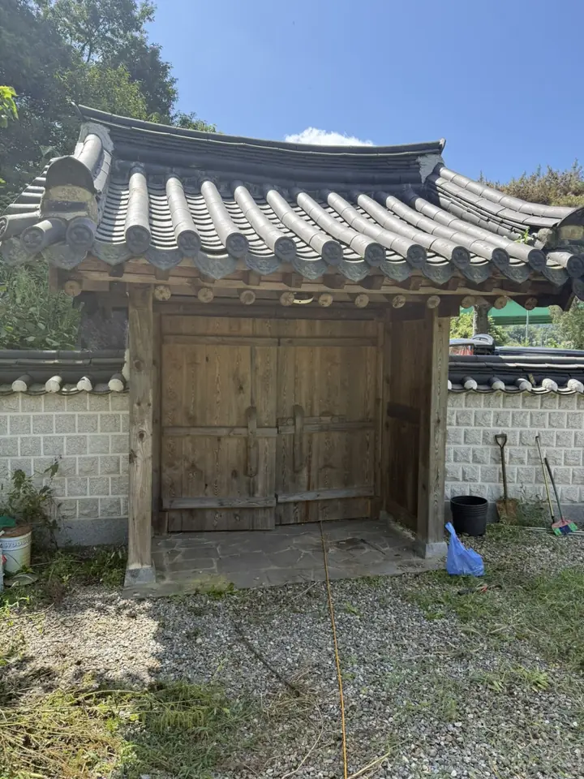
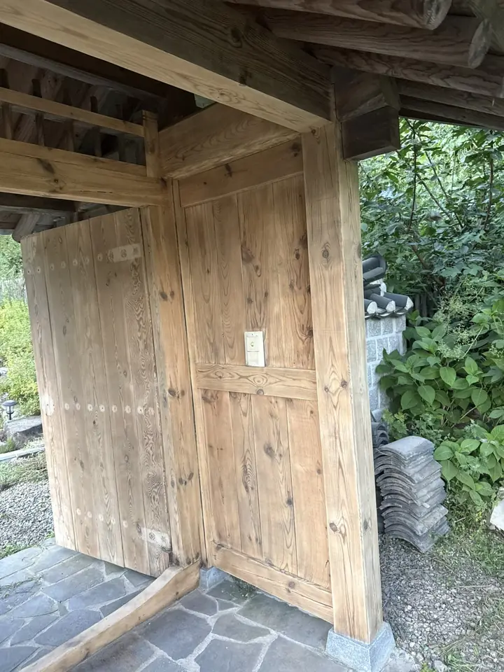
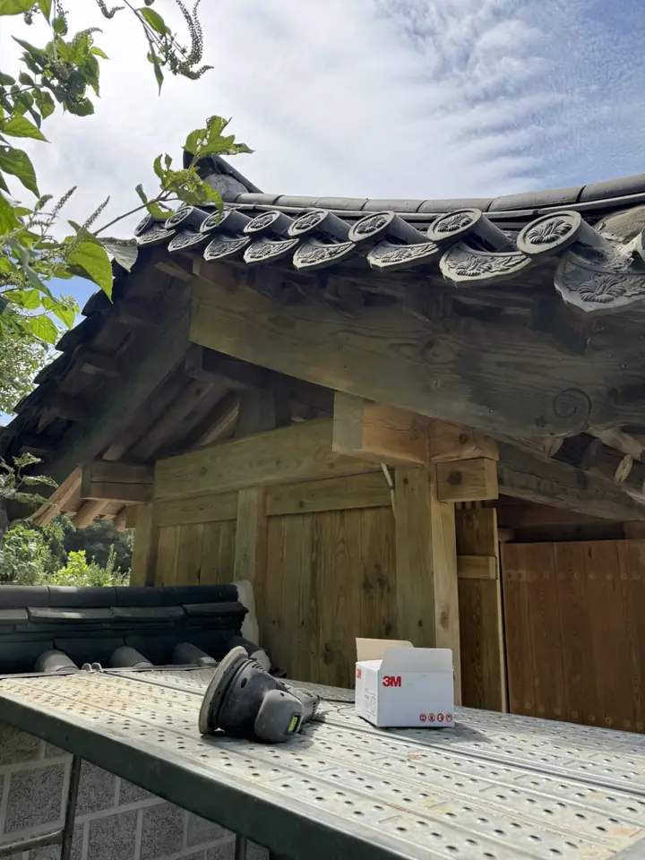
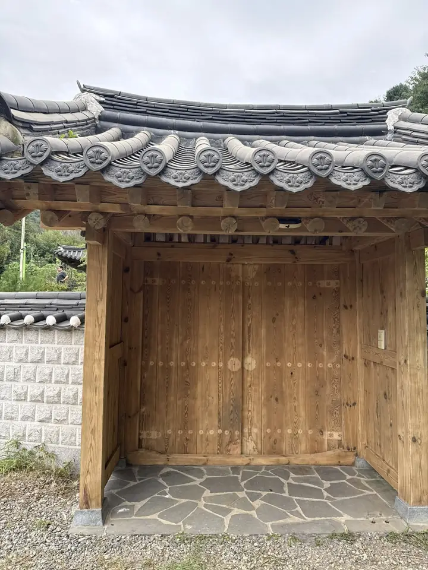
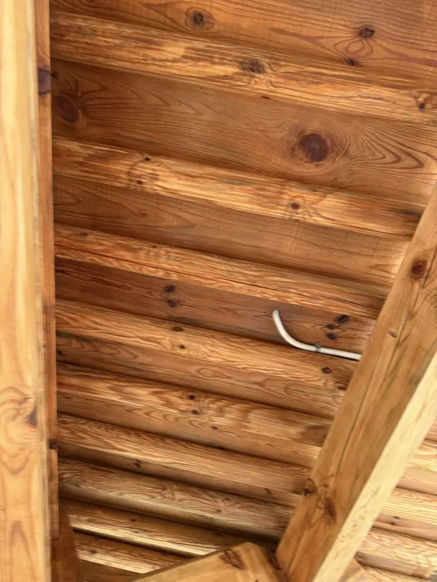
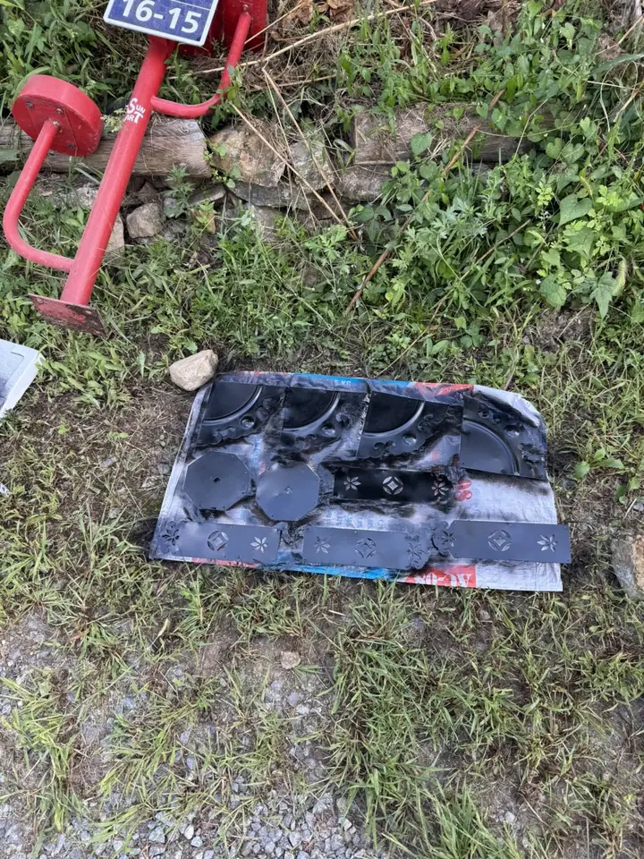

가평 한옥 솟을대문 오일스테인, 목재 샌딩과 변색 제거
오랜 세월 비바람을 맞아 색이 어두워지고 표면이 거칠어진 가평의 솟을대문입니다. 샌딩으로 변색을 걷어 낸 뒤 오일스테인으로 다시 마감했습니다.
변색은 자외선과 습기가 겹쳐 생깁니다
오랜 세월 비바람을 맞은 목재는 색이 어두워지고 표면이 거칠어집니다. 그대로 두면 나무 자체가 상할 수도 있어 샌딩 후 오일스테인으로 다시 마감하기로 했습니다.
오일스테인을 다시 고른 이유
일반 도장보다 전통 가옥 특유의 질감을 잘 살릴 수 있고, 가평처럼 산 근처라 습도가 높은 지역에 맞습니다.
건조는 지붕 아래에서 했습니다
도장이 벗겨진 곳은 기존 도료를 정리하고 방청 처리 후 재도장했습니다. 건조 중에는 그늘진 곳에 펼쳐 두고 색이 고르게 올라오는지 살폈습니다.
이 현장의 작업
- 현장: 경기도 가평 한옥 솟을대문
- 기존: 색이 어둡고 표면이 거칠며 얼룩덜룩한 목재
- 작업: 샌딩 후 오일스테인 마감
- 재도장 주기: 보통 2~3년
PHOTO
가평 한옥 솟을대문 현장 사진






FAQ
가평 한옥 솟을대문, 자주 묻는 질문
색상을 선택할 수 있나요?
기존 색보다 밝게 바꾸는 것도 가능합니다. 원하시는 색을 알려 주세요.
건조는 얼마나 걸리나요?
날씨에 따라 다르지만 보통 하루 정도입니다.